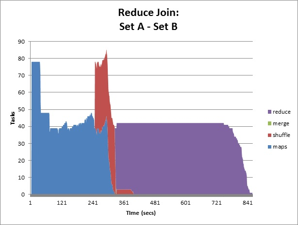

Collecting the job logs
The Cloudera jobtracker shows the status of jobs, and individual tasks in HTML format. Storing the HTML job details manually will be a tedious task. Each task in the job will have a separate HTML page containing the counters used by the task. The counters will provide useful information for performance analysis. To simplify the logging process the below shell scripts can be used.
- Script that stores job log, map & reduce tasks overview, and individual map task counters.
- Script that stores job log, map & reduce tasks overview, and individual reduce task counters.
Processing the log file in the job output directory
The log file in the job output directory is obscure, and cannot be easy analyzed. A python script that generates the timeline of the tasks in the job can be used to create elegant charts (see image below). The smith college CS department’s Hadoop tutorial page has information for downloading and running the python script. 